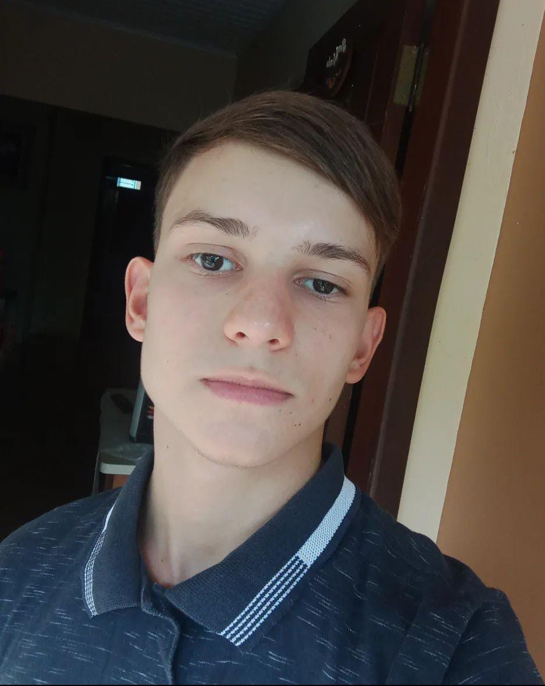

Sobre mim
Me chamo Leonardo Sasse, tenho 18 anos, nascido na cidade de Jaraguá do Sul do estado de Santa Catarina e atualmente moro na cidade de Maripá do estado do Paraná.
Gosto de pedalar em estrada rural, pescar, ir no sitio.
Comecei a ter interesse na área de analise e desenvolvimento de sistemas e quis fazer o curso na faculdade BIOPARK, pois é de curto prazo e também tem a possibilidade de trabalhar de home-office e é um mercado que está se expandindo muito.
Quero me tornar um desenvolvedor full-stack e vou conseguir isso me esforçando a aprender mais sobre consúmindo conteúdos em cursos que podem ser extracurriculares, colaborando com meu crescimento pessoal, profissonal e com a instituição a qual fui engajado e construir um futuro com isso.
Formação Acadêmica
Cursando o 1º período de Analise e Desenvolvimento de Sistemas na faculdade BIOPARK. (2024-2026)
Experiência Profissional
Fui estágiario na prefeitura municipal de Maripá-PR durante dois anos, atuando primeiramente no setor de compras, realizava ordens de compras no sistema, montava pastas de processos licitatórios, carimbava e enúmerava as páginas. Posteriormente fui pro setor de protocolo/auxiliar admnistrativo e atendia ao público que geralmente pediam algum requerimento, por exemplo poda ou corte de arvore, ITBI, entre outros pedidos e eu relizava esses pedidos de requerimento no sistema e encaminhava o mesmo para outros setores internamente para serem resolvidos e depois retornava para eu arquivar o mesmo. E eu também realizava entregas de documentos para outros pontos da cidade.
Habilidades
Atencioso, empatico, determinado, proativo.
Contato
E-mail: leosasse55@gmail.com
Telefone: (44)99921-9055
Linkedin: https://www.linkedin.com/in/leonardo-sasse-129649300/
